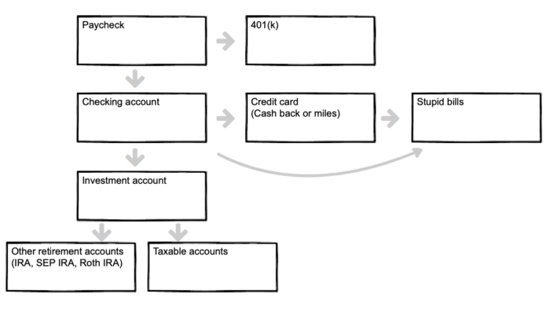
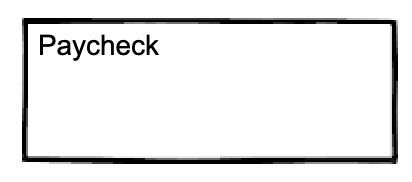
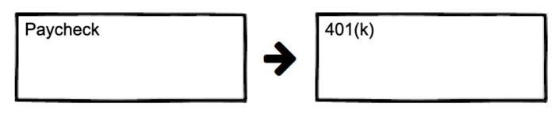
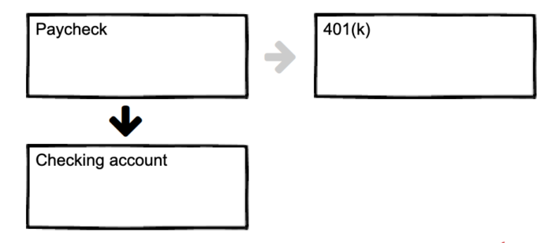
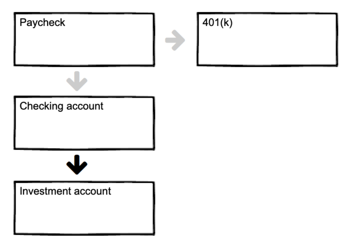
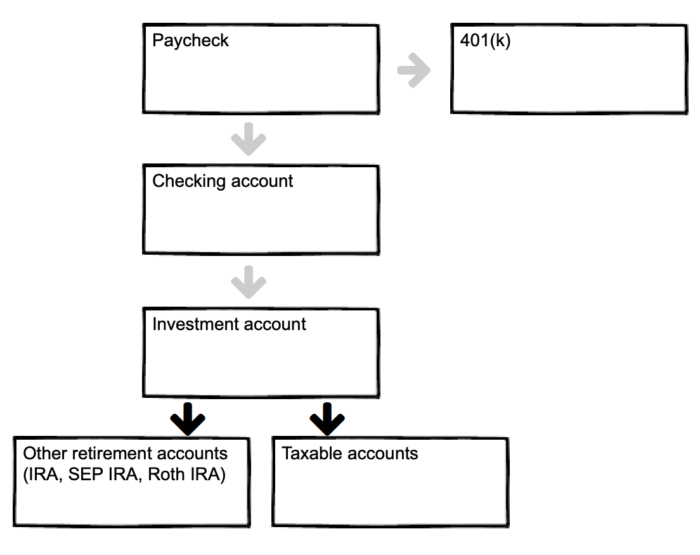
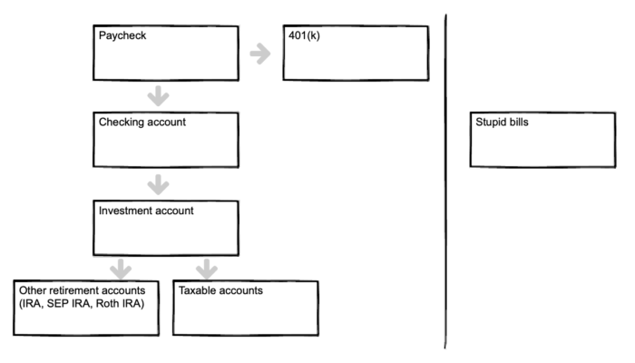
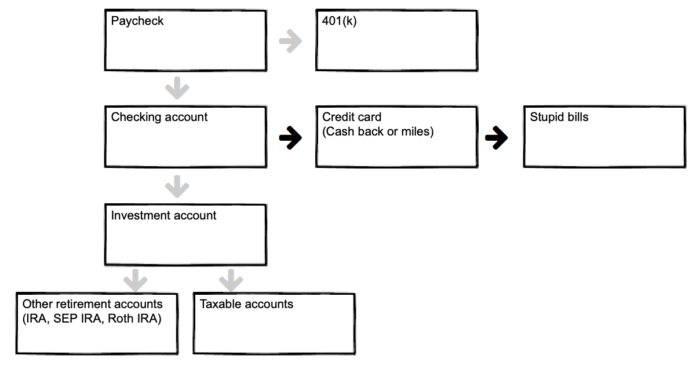
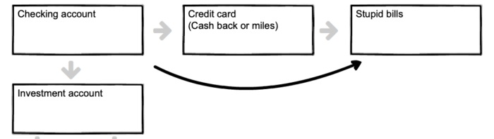
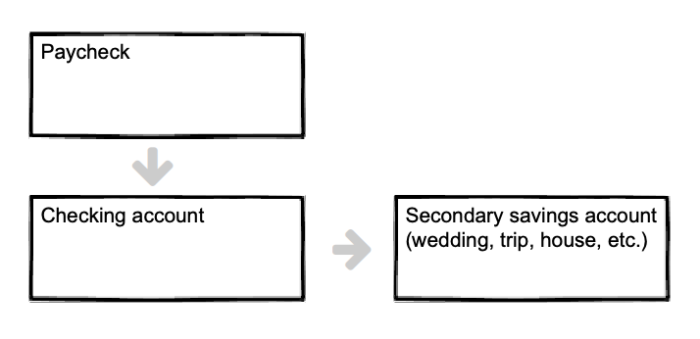

Financial freedom · Part 4
Chapter 15: How to build wealth on autopilot—in two hours or less
{kind=link}

A step-by-step guide
Picture two people:
The first guy lies around in his underpants all day, watching basketball.
The second person takes 2 hours this Sunday to automate their finances.
Now, fast forward 20 years:
Based on that one single Sunday afternoon, Mr. Underpants is still scraping by, while Mr. Sunday Investor is now a millionaire, with enough investment income to become financially free.
Building wealth is easy.
Because unlike diet, or exercise—which take a consistent commitment, day in and out—you can set up your finances in an afternoon, and enjoy the benefits for years, and even decades to come.
The sad truth, however, is that few people ever spend that afternoon setting everything up.
But not you.
Oh, no, definitely not you.
Let's see how it's done—and get you up and running in an hour (or two).
How to automate your finances
Paycheck
It all starts with your:

... and then you contribute to your 401(k) (if applicable).
401(k)

How much should you contribute to your 401(k)? There are two answers:
-
The short answer: contribute as much as your employer will match. For example, if your employer will match your contributions up to $5,000 a year, then contribute $5,000 a year—and not a penny more.
-
The long answer: contribute up to your employer match, and maybe more. Read this guide to investment order to understand when investing more into your 401(k) makes sense—and when it doesn't.
Now set up direct deposit to your bank account.
Bank account(s)

Success. Now your checking account will start fill up with your riches. But you don't want to keep your money there.
Why? Because if your bank account is flush, you're more likely to blow cash on all types of stupidness.
On the other hand, if your wealth is invested in accounts that can't be accessed at 1am outside your favorite bar, you're less likely to spend it on stupid stuff.
Therefore, set up automatic transfers to your investment account.
Investment accounts

If your bank account is like your favorite bar—in that it's always open—then your investment account is a walled garden. Visiting hours are brief.
This simple trick—putting your money into your investment account—sets you up for success.
Of course, it's probably not just one account. You may have several accounts in your brokerage account.
-
Your retirement accounts (IRA, ROTH IRA, SEP IRA, HSA)
-
Your taxable accounts.

Key point: by setting up your accounts like the above, you are "paying yourself first." It's FAR more effective to invest first and live of the remainder, than to spend first and invest the rest. This key point is worth six or seven figures in wealth over a lifetime.
Recurring expenses (aka stupid bills)
I don't like paying bills. So much so that I've spent years living in other people's houses to avoid paying living expenses, share a car and cell phone with my wife, and refuse to walk by Girl Scouts peddling cookies.
These evil bastards are the most common:
-
Rent/mortgage
-
Phone
-
Internet
-
Utilities
-
Water
-
Garbage
-
Stupid subscriptions that should be canceled (e.g. Netflix, TV, Hulu, Amazon, etc.)

Set all recurring bills to auto-pay from your credit card, then autopay your credit card bill from your bank account.
Why a credit card?
Two reasons:
-
Credit cards improve your cash flow. Credit cards, used properly, are amazing things. You literally spend other people's money for free, then pay them back 30 days later. This is a nice perk, especially if you have irregular income and occasionally have a "cash crunch."
-
Credit cards give you benefits. Whether you prefer cash-back, frequent flyer miles, or something else, credit cards can easily give you anywhere from 1–6% return on your expenses. This is huge.
Be aware, though, that credit cards are like friends with benefits: it's all well and good—until somebody gets screwed.

Of course, not every monthly expense can be paid through a credit card. Many mortgages, for example, cannot be paid on credit.
Therefore, pay as many bills as possible, automatically, with your credit card—and pay the remainder from your checking account, automatically.
See below:

A word on reducing your bills:
Turn off automated retailer notifications. Log out of Amazon and other sites you spend money on.
Non-recurring expenses (includes fun stuff!)
Look, you're gonna go out, right? Booze, exotic cuisines, and adventures to your local grocer are all non-recurring expenses.
For all these expenses, use your credit card as much as possible. There are several benefits:
-
Similar to recurring expenses, you'll rack up cash back and/or frequent flyer miles and improve cash flow.
-
You can easily track your spending on a credit card. It's much easier to see what percentage of expenses goes toward food on a credit card, rather than cash.
-
You may be able to write off some expenses—such as dining out, entertainment, or gas for your car—for business purposes. Credit cards make it easy to track these (whereas cash makes it nearly impossible).
If you're the adventurous type, listen up: Use credit cards to autopay your bills. Then use frequent flyer points to travel. It also goes great with house sitting (which is featured heavily in the "reduce your housing expenses" article).
Putting it all together
Special situations
The flowchart above covers most situations. Below we cover a few other scenarios, and how to tackle them.
Existing debt (besides a mortgage)
If you have existing debt besides a mortgage, you'll want to set up autopay for them as well.
In general, focus on contributing to your 401(k) first—up to your employer's match—and then hit the debt hard. For an in-depth look, read this guide to investment order.
Irregular income
If you're a freelancer or business owner, you probably don't have a consistent income every month. That's fine. Simply keep a larger amount of cash in your checking account. Many people, myself included, just use one checking account for two purposes: as a catchall account, and also as the emergency account (1–6 months expenses).
Of course, you may prefer to have a separate savings account. See below.
Extra saving accounts
You may want a separate account or two. For example, you may want a separate account for your emergency fund (1–6 months expenses, and not more) or for a wedding, a big trip, or a new car. Keep in mind, however, that buying a new car is equivalent to lighting a pile of cash on fire, but hey, if that's your thing, so be it.
If you'd like a separate saving account, simply create a monthly auto-transfer from your main checking account to your savings account.
For example:
